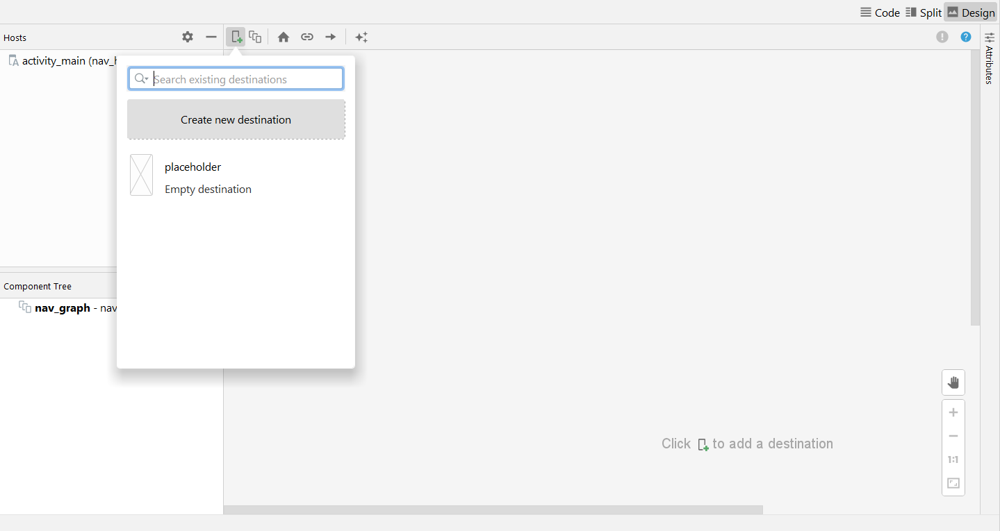
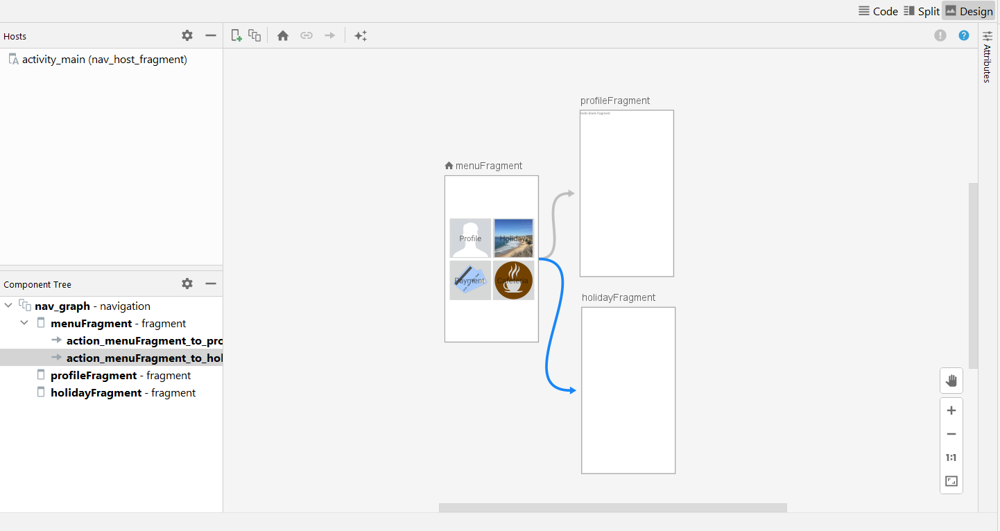

Labor 04 - Felhasználói felület készítése - Fragmentek, Chartok¶
Bevezető¶
A labor során egy HR alkalmazást készítünk el, amelybe belépve a felhasználó meg tudja tekinteni személyes adatait, illetve szabadságot tud rögzíteni. Az alkalmazás nem használ perzisztens adattárolást és valós bejelentkeztetést, csak demo adatokkal dolgozik. A labor fő témája a Fragmentekkel való felületkészítés, illetve a Navigation Component használata lesz.


IMSc
A laborfeladatok sikeres befejezése után az IMSc feladat-ot megoldva 2 IMSc pont szerezhető.
Értékelés¶
Osztályzás: - Főmenü képernyő: 1 pont - Profil képernyő: 1 pont - Szabadság képernyő: 1 pont - Dátumválasztó, napok csökkentése: 1 pont - Önálló feladat (szabadság továbbfejlesztése): 1 pont
IMSc: Fizetés menüpont megvalósítása - Kördiagram: 1 IMSc pont - Oszlopdiagram: 1 IMSc pont
Előkészületek¶
A feladatok megoldása során ne felejtsd el követni a feladat beadás folyamatát.
Git repository létrehozása és letöltése¶
-
Moodle-ben keresd meg a laborhoz tartozó meghívó URL-jét és annak segítségével hozd létre a saját repository-dat.
-
Várd meg, míg elkészül a repository, majd checkout-old ki.
Egyetemi laborokban, ha a checkout során nem kér a rendszer felhasználónevet és jelszót, és nem sikerül a checkout, akkor valószínűleg a gépen korábban megjegyzett felhasználónévvel próbálkozott a rendszer. Először töröld ki a mentett belépési adatokat (lásd itt), és próbáld újra.
-
Hozz létre egy új ágat
megoldasnéven, és ezen az ágon dolgozz. -
A
neptun.txtfájlba írd bele a Neptun kódodat. A fájlban semmi más ne szerepeljen, csak egyetlen sorban a Neptun kód 6 karaktere.
Projekt létrehozása¶
Hozzunk létre egy új Android projektet 'Empty Activity' sablonnal! Az alkalmazás neve legyen WorkplaceApp, a Package name pedig hu.bme.aut.workplaceapp.
Az alkalmazást természetesen telefonra készítjük, és használhatjuk az alapértelmezett 21-ös minimum SDK szintet.
Előzetesen töltsük le az alkalmazás képeit tartalmazó tömörített fájlt és bontsuk ki. A benne lévő drawable könyvtárat másoljuk be az app/src/main/res mappába (Studio-ban res mappán állva Ctrl+V).
Képernyők kezelése Android alkalmazásokban¶
A legtöbb mobilalkalmazás jól elkülöníthető oldalak/képernyők kombinációjából épül fel. Az egyik első fő döntés, amit alkalmazástervezés közben meg kell hoznunk, ezeknek a képernyőknek a felépítése, illetve a képernyők közötti navigáció megvalósítása. Egy Android alapú alkalmazás esetén több megoldás közül is választhatunk:
- Activity alapú megközelítés: Minden képernyő egy Activity. Mivel az Activity egy rendszerszintű komponense az Androidnak, ezért ennek kezeléséért is az operációs rendszer a felelős. Mi közvetlenül sose példányosítjuk, hanem Intent-et küldünk a rendszer felé. A navigációért is a rendszer felel, bizonyos opciókat flagek segítségével tudunk beállítani.
- Fragment alapú megközelítés: Ez esetben a képernyőink egy vagy több Fragment-ből épülnek fel. Ezeknek kezelése az alkalmazás szintjén történik meg, emiatt mindenképp szükséges egy Activity, mely a megjelenítésért felel. A megjelenítést, illetve a navigációt a FragmentManager osztály végzi.
- Egyéb egyedi megoldás: Külső vagy saját könyvtár használata a megjelenítéshez, mely tipikusan az alap View osztályból származik le. Ilyen például a régi Conductor, illetve az újabb Jetpack Compose.
Régebben az alkalmazások az Activity alapú megközelítést használták, később azonban áttértek a Fragmentekre. Az ilyen alkalmazásoknál összesen egy fő Activity van, mely tartalmazza azt a FragmentManager példányt, amit a későbbiekben a Fragment alapú képernyők megjelenítésére használunk.
Ez egy alapvetően rugalmas és jól használható megoldás volt, azonban ehhez részleteiben meg kellett ismerni a FragmentManager működését, különben könnyen hibákba futhattunk. Ennek a megoldására fejlesztette ki a Google a Navigation Component csomagot, mellyel az Android Studió környezetében egy grafikus eszközzel könnyen létre tudjuk hozni az oldalak közötti navigációt, illetve ezt a kódból egyszerűen el tudjuk indítani.
Navigation Component inicializálás¶
Első lépésként adjuk hozzá a Navigation Component csomagot az üres projektünkhöz. Ehhez a modul szintű build.gradle fájlban a dependencies részhez vegyük fel a következő függőségeket:
def nav_version = "2.5.1"
implementation "androidx.navigation:navigation-fragment-ktx:$nav_version"
implementation "androidx.navigation:navigation-ui-ktx:$nav_version"
android részben:
buildFeatures {
viewBinding true
}
A Navigation Component egy navigációs gráfot használ a képernyők, illetve a közöttük lévő kapcsolatok definiálására. Ezt a gráfot a többi erőforráshoz hasonlóan egy .xml kiterjesztésű fájlban tudjuk megadni. Hozzuk létre ezt a fájlt:
- A
resmappán jobb gombbal kattintva válasszuk ki a New → Android Resource Directory opciót, majd a Resource Type mezőben válasszuk ki a navigation lehetőséget. - Az így létrejött
navigationmappán jobb klikkelve válasszuk ki a new → Navigation Resource File opciót, legyen a fájl neve nav_graph.
Ahhoz, hogy a létrehozott navigációs gráf által működjön az alkalmazásunk, fel kell vennünk az alkalmazásunkban is. Ehhez módosítanunk kell az üres Activity példányunkat. Nyissuk meg az activity_main.xml fájlt, és írjuk felül a tartalmát az alábbi kóddal:
<?xml version="1.0" encoding="utf-8"?>
<androidx.constraintlayout.widget.ConstraintLayout xmlns:android="http://schemas.android.com/apk/res/android"
xmlns:app="http://schemas.android.com/apk/res-auto"
xmlns:tools="http://schemas.android.com/tools"
android:layout_width="match_parent"
android:layout_height="match_parent"
tools:context=".MainActivity">
<androidx.fragment.app.FragmentContainerView
android:id="@+id/nav_host_fragment"
android:name="androidx.navigation.fragment.NavHostFragment"
android:layout_width="0dp"
android:layout_height="0dp"
app:layout_constraintLeft_toLeftOf="parent"
app:layout_constraintRight_toRightOf="parent"
app:layout_constraintTop_toTopOf="parent"
app:layout_constraintBottom_toBottomOf="parent"
app:defaultNavHost="true"
app:navGraph="@navigation/nav_graph" />
</androidx.constraintlayout.widget.ConstraintLayout>
FragmentContainerView lesz az a nézet, melyben a navigációs gráfban felvett képernyők meg fognak jelenni. A navGraph paraméterrel tudjuk megadni az aktuális navigációs gráfot, míg a defaultNavHost-al tudjuk jelezni, hogy a rendszer vissza gombját alapértelmezetten ennek a nézetnek kell lekezelnie.
Több navigációs gráf
Bár a Navigation Component támogatja, hogy több különböző navigáció gráfot is létrehozzunk az alkalmazásunkban, a legtöbb alkalmazásnál elegendő egy darab.
Próbáljuk meg futtatni az alkalmazást! Az indulás után az alkalmazásunk crashelni fog, mivel még nem vettünk fel képernyőket a navigáció gráfban, az Activity semmit se tud megjeleníteni, hibára fut.
Főmenü képernyő¶
Az első képernyő, amit létrehozunk, a főoldal lesz, melyről a többi oldalra tudunk navigálni. A labor során 2 funkciót fogunk megvalósítani, ezek a Profil és a Szabadság.
Nyissuk meg a nav_graph.xml fájlt, és kattintsunk a New Destination gombra (bal felső gomb), majd a Create new destination gombra:

Válasszuk ki a Fragment (Blank) gombot, és legyen az oldal neve MenuFragment. Ezzel létrehoztunk az első oldalunkat, ami automatikusan megkapta a Home Destination jelölőt, ezzel mutatva, hogy az alkalmazás indulásakor ez lesz az első oldalunk.
A létrejött fragment_menu.xml tartalmát cseréljük ki az alábbira:
<?xml version="1.0" encoding="utf-8"?>
<LinearLayout xmlns:android="http://schemas.android.com/apk/res/android"
android:layout_width="match_parent"
android:layout_height="match_parent"
android:layout_margin="16dp"
android:gravity="center"
android:orientation="vertical">
<LinearLayout
android:layout_width="match_parent"
android:layout_height="wrap_content"
android:orientation="horizontal">
<FrameLayout
android:layout_width="0dp"
android:layout_height="wrap_content"
android:layout_weight="1">
</FrameLayout>
<FrameLayout
android:layout_width="0dp"
android:layout_height="wrap_content"
android:layout_weight="1">
</FrameLayout>
</LinearLayout>
<LinearLayout
android:layout_width="match_parent"
android:layout_height="wrap_content"
android:orientation="horizontal">
<FrameLayout
android:layout_width="0dp"
android:layout_height="wrap_content"
android:layout_weight="1">
</FrameLayout>
<FrameLayout
android:layout_width="0dp"
android:layout_height="wrap_content"
android:layout_weight="1">
</FrameLayout>
</LinearLayout>
</LinearLayout>
Egy függőleges LinearLayout-ba tettünk bele 2 vízszintes LinearLayout-ot, mindkettő 2 gombot fog tartalmazni. Súlyozás segítségével 2 részre osztottuk a vízszintes LinearLayout-okat. A gombon a háttér és a felirat elhelyezéséhez a korábbi laboron már látotthoz hasonlóan FrameLayout-ot fogunk használni.
Az első gombot például így készíthetjük el (a FrameLayout tagbe írjuk):
<ImageButton
android:id="@+id/btnProfile"
android:layout_width="match_parent"
android:layout_height="match_parent"
android:adjustViewBounds="true"
android:scaleType="fitCenter"
android:src="@drawable/profile" />
<TextView
android:layout_width="wrap_content"
android:layout_height="wrap_content"
android:layout_gravity="center"
android:text="Profile"
android:textSize="34sp" />
A további 3 gombot ennek a mintájára készítsük el ezekkel az értékekkel:
| Szöveg | ID | Kép |
|---|---|---|
| Holiday | @+id/btnHoliday |
@drawable/holiday |
| Payment | @+id/btnPayment |
@drawable/payment |
| Cafeteria | @+id/btnCafeteria |
@drawable/cafeteria |
Ne felejtsük el a szövegeket kiszervezni erőforrásba! (a szövegen állva Alt+Enter)
Valósítsuk meg a navigációt a két oldalra. Hozzunk létre két új Fragment (Blank) képernyőt (ProfileFragment és HolidayFragment). A navigációs gráfban az oldalak közötti navigációt akciókkal tudjuk meghatározni. Egy új akcióhoz fogjuk meg a kiindulási képernyő jobb oldalán lévő kis pöttyöt, és húzzuk a cél oldalra. A két akció létrehozása után így fog kinézni a navigációs gráf:

Az akciók meghívásához használjuk a view binding-ot a MenuFragment-ben:
class MenuFragment : Fragment() {
private lateinit var binding : FragmentMenuBinding
override fun onCreateView(
inflater: LayoutInflater,
container: ViewGroup?,
savedInstanceState: Bundle?
): View {
binding = FragmentMenuBinding.inflate(inflater, container, false)
return binding.root;
}
override fun onViewCreated(view: View, savedInstanceState: Bundle?) {
super.onViewCreated(view, savedInstanceState)
binding.btnProfile.setOnClickListener {
findNavController().navigate(R.id.action_menuFragment_to_profileFragment)
}
binding.btnHoliday.setOnClickListener {
findNavController().navigate(R.id.action_menuFragment_to_holidayFragment)
}
}
}
findNavController() függvénnyel érhetjük el a NavController osztály aktuális példányát, mellyel a navigációt tudjuk megvalósítani. A navigációhoz használt akciókhoz automatikusan generálódik egy azonosító, de ezeket a szerkesztőben módosíthatjuk, ha szeretnénk.
Próbáljuk ki az alkalmazást! 4 gombnak kell megjelennie és a felső kettőn működnie kell a navigációnak a (még) üres Fragment-kbe.
Profil képernyő elkészítése¶
A Profil képernyő két lapozható oldalból fog állni, ezen a név, email, lakcím (első oldal), illetve a személyigazolvány szám, TAJ szám, adószám és törzsszám (második oldal) fognak megjelenni.
Hozzunk létre egy data package-et, azon belül egy Person adatosztályt, ebben fogjuk tárolni az oldalakon megjelenő adatokat.
Az adat típusú osztályok esetében a Kotlin automatikusan deklarál gyakran használt függvényeket, mint például az equals() és hashCode() függvényeket különböző objektumok összehasonlításához, illetve egy toString() függvényt, mely visszaadja a tárolt változók értékét.
data class Person(
val name: String,
val email: String,
val address: String,
val id: String,
val socialSecurityNumber: String,
val taxId: String,
val registrationId: String
)
A Person osztály példányának elérésére hozzunk létre egy DataManager osztályt (szintén a data package-en belül), ezzel fogjuk szimulálni a valós adatelérést (Singleton mintát használunk, hogy az alkalmazás minden részéből egyszerűen elérhető legyen, ehhez a Kotlin által biztosított object kulcsszót használjuk):
object DataManager {
val person = Person(
"Test User", "testuser@domain.com",
"1234 Test, Random Street 1.",
"123456AB",
"123456789",
"1234567890",
"0123456789"
)
}
Hozzunk létre egy új package-et profile néven, majd mozgassuk át ebbe a ProfileFragment osztályunkat. A mozgatás után a következő helyeken javítani kell a fájl útvonalát:
- fragment_profile.xml context rész
- nav_graph.xml megfelelő tag name paramétere
- R importálása a ProfileFragment fájlban.
Ezután elkészíthetjük a két oldalt, Fragmentekkel. Hozzuk létre a profile package-ben a két Fragmentet (New -> Kotlin Class), ezek neve legyen MainProfileFragment és DetailsProfileFragment.
A két Fragmentben származzunk le a Fragment osztályból (androidx-es verziót válasszuk) és definiáljuk felül az onCreateView metódust. Ebben betöltjük a layout-ot és a Person objektum adatait kiírjuk a TextView-kra.
MainProfileFragment.kt:
class MainProfileFragment : Fragment(){
private lateinit var binding: FragmentProfileMainBinding
override fun onCreateView(inflater: LayoutInflater, container: ViewGroup?, savedInstanceState: Bundle?): View? {
binding = FragmentProfileMainBinding.inflate(inflater, container, false)
return binding.root
}
override fun onViewCreated(view: View, savedInstanceState: Bundle?) {
super.onViewCreated(view, savedInstanceState)
val person = DataManager.person
binding.tvName.text = person.name
binding.tvEmail.text = person.email
binding.tvAddress.text = person.address
}
}
DetailsProfileFragment.kt:
class DetailsProfileFragment : Fragment(){
private lateinit var binding: FragmentProfileDetailBinding
override fun onCreateView(inflater: LayoutInflater, container: ViewGroup?, savedInstanceState: Bundle?): View? {
binding = FragmentProfileDetailBinding.inflate(inflater, container, false)
return binding.root
}
override fun onViewCreated(view: View, savedInstanceState: Bundle?) {
super.onViewCreated(view, savedInstanceState)
val person = DataManager.person
binding.tvId.text = person.id
binding.tvSSN.text = person.socialSecurityNumber
binding.tvTaxId.text = person.taxId
binding.tvRegistrationId.text = person.registrationId
}
}
Készítsük el a megfelelő layout-okat a Fragmentekhez (profile_main.xml és profile_detail.xml).
profile_main.xml:
<?xml version="1.0" encoding="utf-8"?>
<LinearLayout xmlns:android="http://schemas.android.com/apk/res/android"
android:layout_width="match_parent"
android:layout_height="match_parent"
android:orientation="vertical"
android:padding="16dp">
<TextView
android:layout_width="wrap_content"
android:layout_height="wrap_content"
android:text="Name:"
android:textAllCaps="true"
android:textSize="20sp" />
<TextView
android:id="@+id/tvName"
android:layout_width="match_parent"
android:layout_height="wrap_content"
android:layout_marginBottom="20dp"
android:textColor="#000000"
android:textSize="34sp" />
<TextView
android:layout_width="wrap_content"
android:layout_height="wrap_content"
android:text="Email:"
android:textAllCaps="true"
android:textSize="20sp" />
<TextView
android:id="@+id/tvEmail"
android:layout_width="match_parent"
android:layout_height="wrap_content"
android:layout_marginBottom="20dp"
android:textColor="#000000"
android:textSize="34sp" />
<TextView
android:layout_width="wrap_content"
android:layout_height="wrap_content"
android:text="Address:"
android:textAllCaps="true"
android:textSize="20sp" />
<TextView
android:id="@+id/tvAddress"
android:layout_width="match_parent"
android:layout_height="wrap_content"
android:layout_marginBottom="20dp"
android:textColor="#000000"
android:textSize="34sp" />
</LinearLayout>
profile_detail.xml:
<?xml version="1.0" encoding="utf-8"?>
<LinearLayout xmlns:android="http://schemas.android.com/apk/res/android"
android:layout_width="match_parent"
android:layout_height="match_parent"
android:orientation="vertical"
android:padding="16dp">
<TextView
android:layout_width="wrap_content"
android:layout_height="wrap_content"
android:text="ID:"
android:textAllCaps="true"
android:textSize="20sp" />
<TextView
android:id="@+id/tvId"
android:layout_width="match_parent"
android:layout_height="wrap_content"
android:layout_marginBottom="20dp"
android:textColor="#000000"
android:textSize="34sp" />
<TextView
android:layout_width="wrap_content"
android:layout_height="wrap_content"
android:text="Social Security ID:"
android:textAllCaps="true"
android:textSize="20sp" />
<TextView
android:id="@+id/tvSSN"
android:layout_width="match_parent"
android:layout_height="wrap_content"
android:layout_marginBottom="20dp"
android:textColor="#000000"
android:textSize="34sp" />
<TextView
android:layout_width="wrap_content"
android:layout_height="wrap_content"
android:text="Tax ID:"
android:textAllCaps="true"
android:textSize="20sp" />
<TextView
android:id="@+id/tvTaxId"
android:layout_width="match_parent"
android:layout_height="wrap_content"
android:layout_marginBottom="20dp"
android:textColor="#000000"
android:textSize="34sp" />
<TextView
android:layout_width="wrap_content"
android:layout_height="wrap_content"
android:text="Registration ID:"
android:textAllCaps="true"
android:textSize="20sp" />
<TextView
android:id="@+id/tvRegistrationId"
android:layout_width="match_parent"
android:layout_height="wrap_content"
android:layout_marginBottom="20dp"
android:textColor="#000000"
android:textSize="34sp" />
</LinearLayout>
(Szervezzük ki a szövegeket erőforrásba)
Már csak a lapozás megvalósítása maradt hátra, ezt a ViewPager osztállyal fogjuk megvalósítani.
A fragment_profile.xml fájlba hozzunk létre egy ViewPager-t:
<?xml version="1.0" encoding="utf-8"?>
<LinearLayout xmlns:android="http://schemas.android.com/apk/res/android"
xmlns:tools="http://schemas.android.com/tools"
android:layout_width="match_parent"
android:layout_height="match_parent"
tools:context="hu.bme.aut.workplaceapp.profile.ProfileFragment">
<androidx.viewpager2.widget.ViewPager2
android:id="@+id/vpProfile"
android:layout_width="match_parent"
android:layout_height="match_parent" />
</LinearLayout>
ViewPager2
A ViewPager2 osztály egy teljes újraírása az eredeti ViewPager osztálynak, a RecyclerView-re alapozva.
A ViewPager osztály egy PagerAdapter osztály segítségével tudja az oldalakat létrehozni. Hozzunk létre egy új PagerAdaptert a két Fragmentünkhöz.
ProfilePagerAdapter.kt:
class ProfilePageAdapter(fragment: Fragment) : FragmentStateAdapter(fragment) {
override fun getItemCount(): Int = NUM_PAGES
override fun createFragment(position: Int): Fragment = when(position){
0 -> MainProfileFragment()
1 -> DetailsProfileFragment()
else -> MainProfileFragment()
}
companion object{
const val NUM_PAGES = 2
}
}
A ProfileFragment-ben rendeljük hozzá a ViewPagerhez a most elkészített adaptert:
class ProfileFragment : Fragment() {
private lateinit var binding: FragmentProfileBinding
override fun onCreateView(
inflater: LayoutInflater,
container: ViewGroup?,
savedInstanceState: Bundle?
): View {
binding = FragmentProfileBinding.inflate(inflater, container, false)
return binding.root
}
override fun onViewCreated(view: View, savedInstanceState: Bundle?) {
super.onViewCreated(view, savedInstanceState)
binding.vpProfile.adapter = ProfilePageAdapter(this)
}
}
Próbáljuk ki az alkalmazást. A Profile gombra kattinva megjelennek a felhasználó adatai és lehet lapozni is.
Szabadság képernyő elkészítése¶
A Szabadság képernyőn egy kördiagramot fogunk megjeleníteni, ami mutatja, hogy mennyi szabadságot vettünk már ki és mennyi maradt. Ezen kívül egy gomb segítségével új szabadnap kivételét is megengedjük a felhasználónak.
Először egészítsük ki a DataManager osztályunkat, hogy kezelje a szabadsághoz kapcsolódó adatokat is:
const val HOLIDAY_MAX_VALUE = 20
const val HOLIDAY_DEFAULT_VALUE = 15
var holidays = HOLIDAY_DEFAULT_VALUE
val remainingHolidays get() = HOLIDAY_MAX_VALUE - holidays
A PieChart kirajzolásához az MPAndroidChart library-t fogjuk használni.
settings.gradle:
dependencyResolutionManagement {
repositories {
...
maven { url "https://jitpack.io" }
}
}
App szintű build.gradle:
dependencies {
...
implementation 'com.github.PhilJay:MPAndroidChart:v3.1.0'
}
Ezután kattinsunk az Android Studioban jobb fent megjelenő Sync Now feliratra vagy a fejlécen szereplő mérges gradle elefánt gombra, hogy a library fájljai letöltődjenek.
Ha a library fájljai letöltődtek, akkor írjuk meg a Fragment layout-ját (fragment_holiday.xml):
<?xml version="1.0" encoding="utf-8"?>
<LinearLayout xmlns:android="http://schemas.android.com/apk/res/android"
xmlns:tools="http://schemas.android.com/tools"
android:layout_width="match_parent"
android:layout_height="match_parent"
android:orientation="vertical"
tools:context="hu.bme.aut.workplaceapp.HolidayFragment">
<com.github.mikephil.charting.charts.PieChart
android:id="@+id/chartHoliday"
android:layout_width="match_parent"
android:layout_height="0dp"
android:layout_weight="1" />
<Button
android:id="@+id/btnTakeHoliday"
android:layout_width="wrap_content"
android:layout_height="wrap_content"
android:text="Take Holiday"
android:layout_gravity="center" />
</LinearLayout>
Írjuk meg a Fragment kódját (HolidayFragment.kt):
class HolidayFragment : Fragment() {
private lateinit var binding : FragmentHolidayBinding
override fun onCreateView(
inflater: LayoutInflater,
container: ViewGroup?,
savedInstanceState: Bundle?
): View {
binding = FragmentHolidayBinding.inflate(layoutInflater, container, false)
return binding.root
}
override fun onViewCreated(view: View, savedInstanceState: Bundle?) {
super.onViewCreated(view, savedInstanceState)
binding.btnTakeHoliday.setOnClickListener {
//TODO: DatePickerDialogFragment megjelenítése
}
loadHolidays()
}
private fun loadHolidays(){
val entries = listOf(
PieEntry(DataManager.holidays.toFloat(), "Taken"),
PieEntry(DataManager.remainingHolidays.toFloat(), "Remaining")
)
val dataSet = PieDataSet(entries, "Holidays")
dataSet.colors = ColorTemplate.MATERIAL_COLORS.toList()
val data = PieData(dataSet)
binding.chartHoliday.data = data
binding.chartHoliday.invalidate()
}
}
Próbáljuk ki az alkalmazást! A PieChart most már megjelenik, de a gomb még nem kell, hogy működjön.
Dátumválasztó megvalósítása¶
A következő lépésben a Take Holiday gombra megjelenő dátumválasztó működését fogjuk megvalósítani. A gomb lenyomására megjelenik egy dátumválasztó és a dátum kiválasztása után a szabad napok eggyel csökkennek.
Hozzunk létre egy DatePickerDialogFragment osztályt:
class DatePickerDialogFragment : DialogFragment(), DatePickerDialog.OnDateSetListener{
override fun onCreateDialog(savedInstanceState: Bundle?): Dialog {
val c = Calendar.getInstance()
val year = c.get(Calendar.YEAR)
val month = c.get(Calendar.MONTH)
val day = c.get(Calendar.DAY_OF_MONTH)
return DatePickerDialog(requireContext(), this, year, month, day)
}
override fun onDateSet(view: DatePicker?, year: Int, month: Int, dayOfMonth: Int) {
//TODO: return result
}
}
Az importoknál a java.util-t válasszuk a Calendarhoz, a Fragment-hez pedig az androidx-es verziót.
Vegyük fel a dialógust a navigációs gráfba! Ehhez kattintsunk a New Destination gombra, és válasszuk ki a most létrehozott DatePickerDialogFragment osztályt.
Dialog a navigációs gráfban
A kiválasztásnál észrevehetjük, hogy a típusnál a Fragment (dialog) van megadva, míg a többi képernyőnél csak Fragment. Ez azért van, mert az osztály a DialogFragment-ből származik le, ami a navigációs gráf máshogy kezel, mivel ez nem egy teljes képernyős nézet. Ha átváltunk a kód nézetbe, ott is látható, hogy dialog taggel van felvéve ez az útvonal.
Adjunk hozzá a navigációhoz egy akciót, mely a HolidayFragment-ből a DatePickerDialogFragment-re mutat. Állítsuk be a gomb eseménykezelőjét a HolidayFragment-ben, hogy lenyomáskor jelenítse meg a dátumválasztót:
binding.btnTakeHoliday.setOnClickListener {
findNavController().navigate(R.id.action_holidayFragment_to_datePickerDialogFragment)
}
Próbáljuk ki az alkalmazást! Mostmár megjelenik a dialógus egy kisebb ablakban, de még a dátumválasztás eredménye nem jut vissza a kiinduló képernyőre.
A kiválasztott dátum feldolgozásához implementáljuk az OnDateSelectedListener-t a HolidayActivity-ben:
class HolidayActivity : AppCompatActivity(), DatePickerDialogFragment.OnDateSelectedListener {
...
override fun onDateSelected(year: Int, month: Int, day: Int) {
val numHolidays = DataManager.holidays
if (DataManager.remainingHolidays > 0){
DataManager.holidays = numHolidays + 1
}
loadHolidays()
}
Fragmentek közötti kommunikáció a Navigation Component segítségével¶
Ahogy láthattuk az eddigi feladatok megoldásaiból, a Navigation Component a használata során maga kezeli a Fragmenteket, ő felelős a példányosításért. Ennek köszönhetően ha kommunikálni akarunk a képernyők között, akkor azt is a Navigation Component segítségével tudjuk megtenni. Kommunikáció során alapvetően két irányről beszélhetünk:
- A hívó fél szeretne valamilyen paramétert átadni az új oldalnak.
- Az új, jelenleg látható oldal szeretne valamilyen értéket visszaadni az előző oldalnak.
Több oldalon keresztüli navigáció
A Navigation Component csak a szomszédos oldalak közötti navigációt teszi lehetővé. Több oldal esetén érdemesebb valamilyen egész alkalmazásra vonatkozó állapotkezelési megoldást használni.
Az új oldalnak való paraméterátadás esetében a felületi szerkesztőben a megfelelő oldalt kiválasztva tudunk felvenni új paramétereket. Itt megadhatjuk a paraméter nevét, típusát, illetve pár egyéb opcionális beállítást. Ezekből a Safe Args csomag segítségével minden akcióhoz egy segédosztály fog generálódni, melyet példányosítva meg tudjuk adni a paramétereket, és ezt átadva a NavController navigate() függvényének, át tudunk navigálni az új oldalra. Az új oldalon pedig a by navArgs() használatával el tudunk kérni egy olyan objektumot, mely tartalmazni fogja ezeket a paramétereket. Ezen a laboron erre nem lesz szükségünk.
Az érték visszaadására a Navigation Component egy elsőre bonyolultnak tűnő megoldást ad, viszont erre szükség van, mivel nincsen garantálva, hogy visszatéréskor az előző Fragment objektum még létezik. A Navigation Component minden képernyőjéhez egy NavBackStackEntry-t rendel, mely többek között tartalmaz egy tárolásra alkalmas objektumot (SavedStateHandle). Az új oldal ebbe tud küldeni egy új értéket, míg az eredeti oldal meg tudja figyelni az ezeken történő változásokat.
Lifecycle
A SavedStateHandle épít az Androidban elterjedt Lifecycle koncepcióra, ennek részletes bemutatása azonban túlmutat a labor anyagán, elég csak magát a kommunikáció módját érteni.
Valósítsuk meg a dátumválasztó felület kommunikációját! Először vizsgáljuk meg a dátumválasztás oldalát.
Vegyünk fel egy új kulcsot a HolidayFragment osztályba, mellyel az eredményt tudjuk azonosítani a fogadóoldalon:
companion object {
const val DATE_SELECTED_KEY = "date_selected"
}
DatePickerDialogFragment-en belül, mely az eredményt fogja tárolni:
data class DatePickerResult(
val year: Int,
val month: Int,
val dayOfMonth: Int,
) : Serializable
Serializable
A Navigation Component kommunikációja a Bundle osztályt használja, ezért nem lehet tetszőleges objektumot átadni neki. A Serializable interfész használata egy könnyű megoldást biztosít erre.
Majd készítsük el a dátumkiválasztás függvényét:
override fun onDateSet(view: DatePicker?, year: Int, month: Int, dayOfMonth: Int) {
val result = DatePickerResult(year, month, dayOfMonth)
findNavController()
.previousBackStackEntry
?.savedStateHandle
?.set(HolidayFragment.DATE_SELECTED_KEY, result)
}
Vizsgáljuk meg, hogyan működik a kommunikáció! Mivel az előző oldalnak akarok értéket visszaadni, a previousBackStackEntry paramétert használom, mely így a HolidayFragment-hez fog tartozni. Ennek a SavedStateHandle objektumán a set() metódushívással tudok paramétert átadni.
Készítsük el a fogadó fél oldalát is. Ehhez az HolidayFragment onViewCreated() metódusában fel kell iratkoznunk a megfelelő eredmény objektumra:
override fun onViewCreated(view: View, savedInstanceState: Bundle?) {
super.onViewCreated(view, savedInstanceState)
binding.btnTakeHoliday.setOnClickListener {
findNavController().navigate(R.id.action_holidayFragment_to_datePickerDialogFragment)
}
findNavController()
.currentBackStackEntry
?.savedStateHandle
?.getLiveData<DatePickerDialogFragment.DatePickerResult>(DATE_SELECTED_KEY)
?.observe(viewLifecycleOwner) {
val numHolidays = DataManager.holidays
if (DataManager.remainingHolidays > 0){
DataManager.holidays = numHolidays + 1
}
loadHolidays()
}
loadHolidays()
}
observe() metódusnak átadott callback metódus (a kapcsos zárójel közötti rész) minden alkalommal meg fog hívodni, amikor valamilyen változás történik az eredményben.
Próbáljuk ki az alkalmazást! Most már a gomb is jól kell, hogy működjön, a napok számának is csökkennie kell a diagramon.
Önálló feladat¶
- Csak akkor engedjünk új szabadságot kivenni, ha a kiválasztott nap a mai napnál későbbi.
- Ha elfogyott a szabadságkeretünk, akkor a Take Holiday gomb legyen letiltva.
iMSc feladat¶
Fizetés menüpont megvalósítása¶
A Payment menüpontra kattintva jelenjen meg egy PaymentActivity rajta egy ViewPager-rel és 2 Fragment-tel (A Profile menüponthoz hasonlóan):
- PaymentTaxesFragment: kördiagram, aminek a közepébe van írva az aktuális fizetés és mutatja a nettó jövedelmet illetve a levont adókat (adónként külön)
- MonthlyPaymentFragment: egy oszlopdiagramot mutasson 12 oszloppal, a havi szinten lebontott fizetéseket mutatva - érdemes az adatokat itt is a DataManager osztályban tárolni